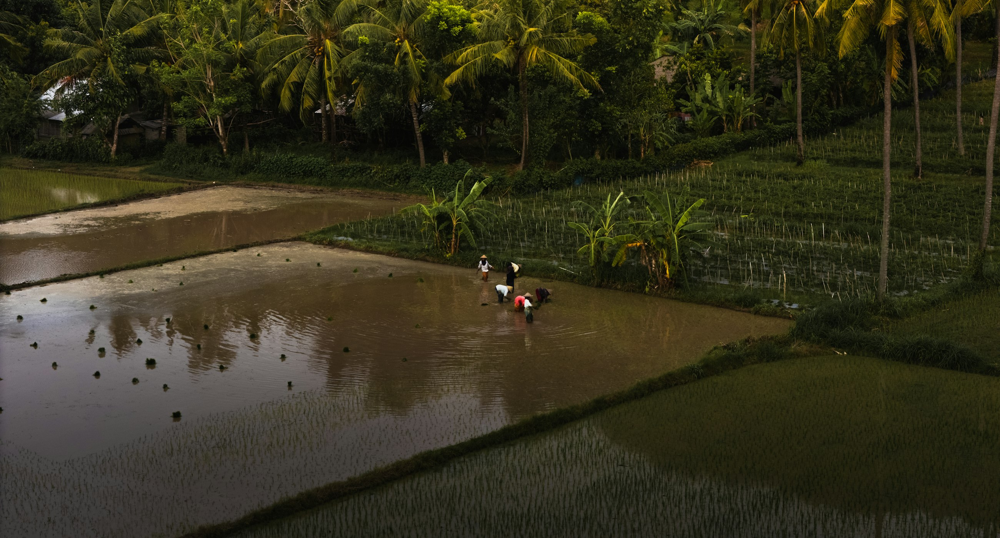
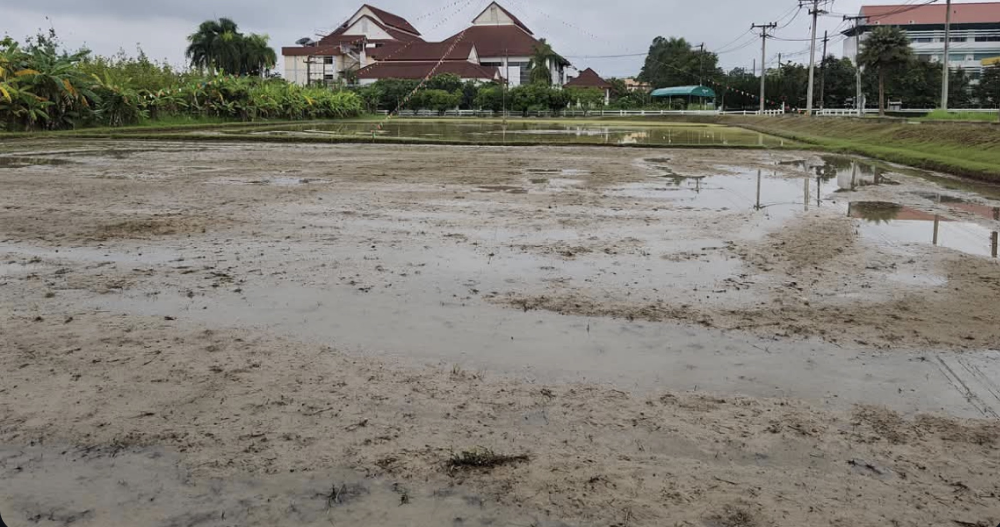
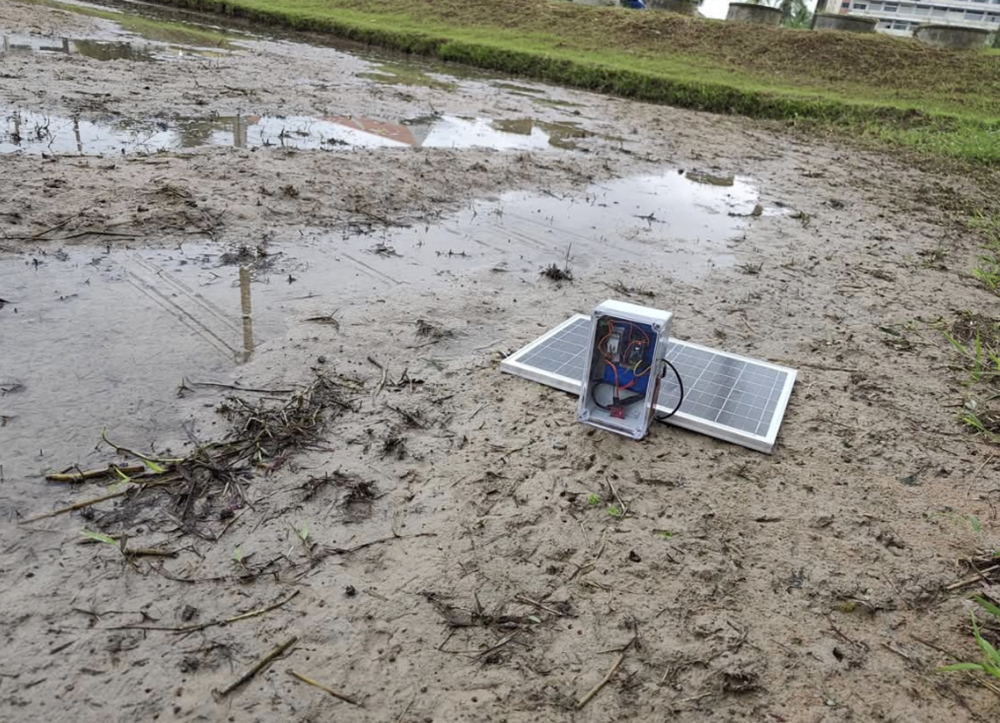
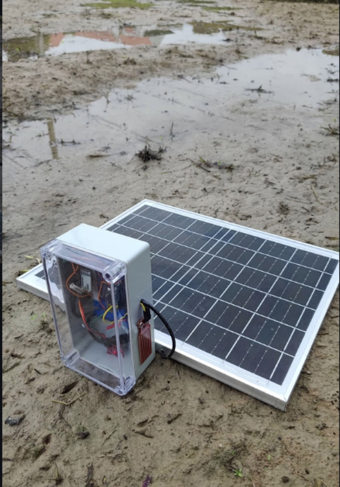
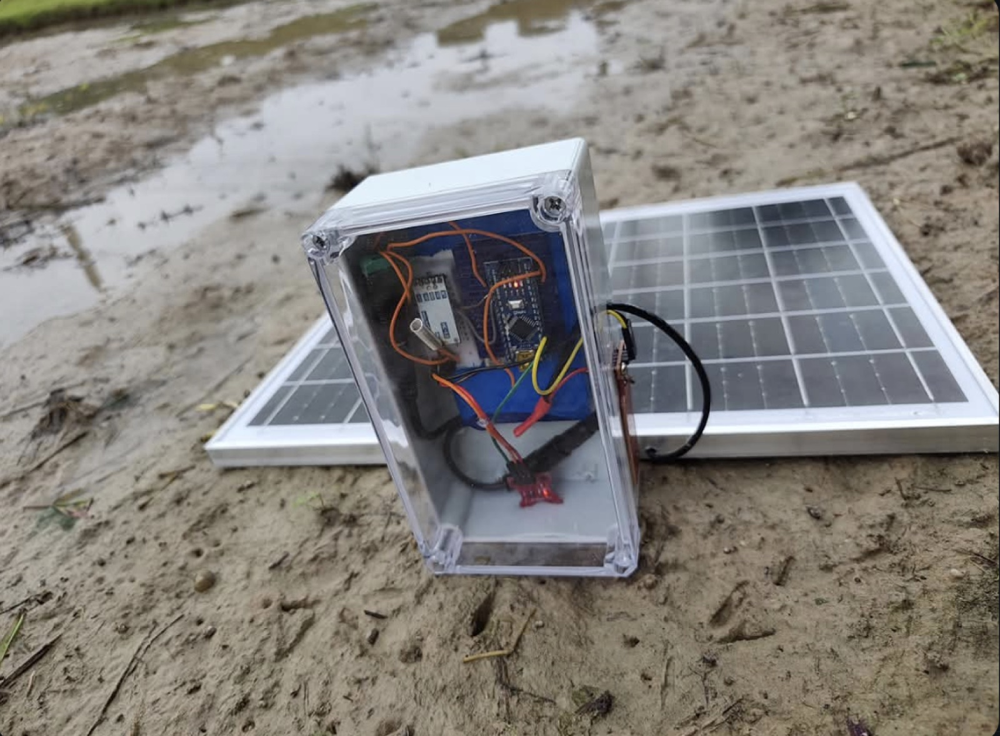
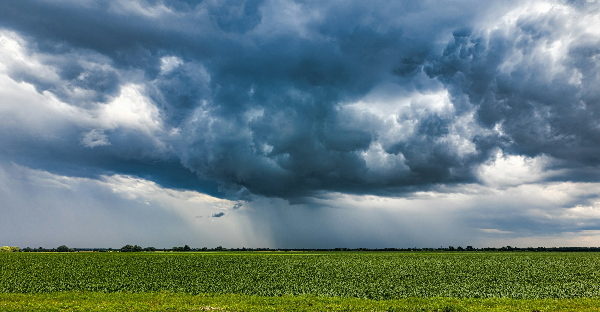
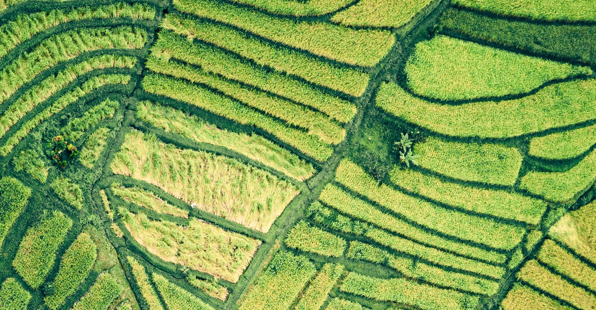

Solar-powered nodes track soil moisture and standing water field by field, relay it over radio, and text you the condition — no app to open, no walk out to check. One SIM covers the whole farm.
Every threshold gets calibrated against a real soil sample on the bench, then the units go into working ground — waterlogged, rutted, and under the overcast skies of an actual wet season.




Photographs from the Maejo pilot, Chiang Mai. Pre-production units.
Built for the reality of a working farm: no internet at the field edge, no mains power, and nobody free to sit watching a screen.
Each node samples soil moisture and surface water on the same cycle and scores the result 0–100 against that site's own wilting point and optimal moisture. One number tells you whether the field is thirsty, right, or waterlogged — and reading both signals together separates a normal irrigation from water that isn't draining.
Nodes reach the base station over 433MHz — verified to 340m in saturated rice paddies, not quoted off a datasheet. Only the base station carries a SIM.
Send STATUS and the base station replies with the current soil reading, water level and a map pin for that node — any time, from any phone. It also texts you unprompted when a field crosses into saturation or standing water. No app, no smartphone required, no connectivity needed on your end.
Solar trickle-charges a LiPo reserve sized to carry each node through several consecutive overcast days — the normal condition through a wet season, and the whole point of not running a cable out to the field.
Every reading is logged, so the dashboard shows condition per field over time, not just right now — how long a field held water after the last rain, which corner dries first, how your readings line up against regional rainfall. SMS is the product; this is the record behind it.

Between wilting point and saturation there's a window where the ground has already told you something and nothing above it has changed yet. FMS reads that window on every field and puts it in your hand — early enough to irrigate, drain, or move something.

Why the ground is worth instrumenting, in the region this system was built for.
Storm figures: 2026 Pacific typhoon season records
"Flood detectors represent a critical shift toward precision farming. These systems successfully achieve foundational goals like minimizing crop damage and giving operators the exact data needed to perform rapid mitigation strategies."
Buy the base station once. Add a node per field after that — no subscription, no per-sensor SIM.
Engineers and researchers building affordable field telemetry from the circuit board up.
No. One standard cellular SIM lives in the Base Module. Sensor nodes reach it over free 433MHz radio — verified to 340m in real field conditions.
A raw soil moisture reading and a 0–100 condition index for each node, scored against that site's wilting point and optimal moisture, plus the surface water level. Text STATUS to the base station and it sends back the current numbers and a map pin. It does not measure nutrients, pH, or soil temperature — moisture and standing water only.
It tells you where the field sits between dry and saturated, on demand, so you can decide. What it does not do yet is text you unprompted on the dry side — automatic alerts currently fire only when a field goes saturated or standing water rises. Dry-side irrigation alerts are on the roadmap, not shipping.
No. The Base Module uses standard cellular networks to send a direct SMS. Nothing on your end needs an internet connection.
Yes. Internal batteries carry each module through several days without direct sun, and the panels keep a trickle charge going even under heavy overcast.
340 meters, measured in saturated rice paddies at 1200bps. The radio is rated further under open line-of-sight, but 340m is the number we design around, because that's what we've actually seen in the mud.
Dry-side irrigation alerts, full multi-hop mesh routing (today it's a single-hop bounce-and-dedup relay), per-site soil calibration for exact thresholds, an itemized bill of materials behind the $120 target, battery telemetry, and the rain gauge node. Anything marked PLANNED or IN PROGRESS above is not shipping today.
Talk hardware, pricing, or how a pilot could work on your land.
Growers, cooperatives, agricultural universities and extension programs — all welcome.
Contact the team ›